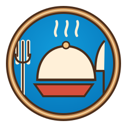

Пяць іконак каруселі — насычаны сіні і бронза
Варыянт паводле апошняга каляровага рэферэнса: больш натуральны насычаны сіні фон, бронзавы кант і выразныя формы без блікаў, воблакаў і хваляў. Злева прыклад прыглушанага стану, справа — поўны колер у цэнтры. Паглядзець гэтыя SVG у самім макеце «Пра горад» #257.
Аэрапорт
У ценіУ цэнтры
Адкрыць SVG
Гданьск
У ценіУ цэнтры
Адкрыць SVG
Карта
У ценіУ цэнтры
Адкрыць SVG
Ежа

У ценіУ цэнтры
Адкрыць SVG
Транспарт
У ценіУ цэнтры
Адкрыць SVG
У цяперашняй каруселі «Пра горад» чатыры раздзелы; іконка «Карта» пакуль запасная. Прыглушэнне на гэтым экране — візуальная прапанова, не зацверджаная анімацыя. SVG можна асобна маштабаваць і рэдагаваць без страты якасці.